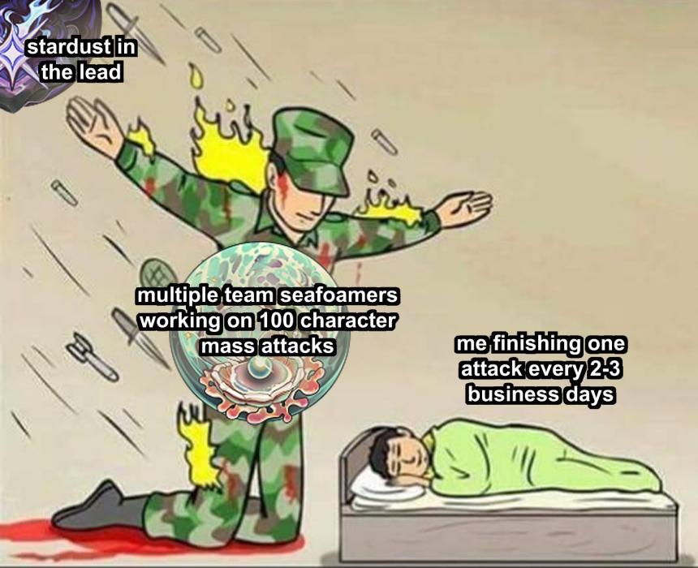

ArtFight 2024 Personal Retrospective
ArtFight is an annual art-gifting game where participants are put on opposing teams and draw the others' OCs to gain points. But I assume you already know that. If you haven't already seen, you can take a looksee of the art I made for the event on my artfight page OR directly on my website in this month's batch of artwork, here and here!
Anyhow...Impressions
Ohhhh I loved the themes this year. I feel like they were tailor-made for me and me specifically, me, the man whose whole thing as of late is space-fish people. mfUCKINgGGgg........ stardust & seafoam................ u can't make me choose bitch EOU CANT MAKE ME CHOOOOOSEEEEE.... (i chose stardust lol). Usually I want to align with the team who I perceive as the underdog but stardust felt special to me, it felt very RIGHT. Props to you seafoam mfs though, you folk were fighters.
Maybe my perchant for the theming this year was foreshadowing for how much consistent MOMENTUM i would have this year :D
Like, this was insaen...... i'll be looking at these for 50 billion years....

I’ve been a participant for the last 3 years and never in any other event have I received as many attacks as this. In all the previous, I've only ever had a max of 7 in one year, but for some odd reason, this year was TRIPLE that amount. INSANE!! I wonder if the sizeable turnaround was because I’d signaled my participation on Neocities? Or if event attendance just happened to blow up. I heard there was a spike of new users from TikTok but i wouldn’t know 🤷 Either way, the sudden influx was VERY intimidating before I got used to it... feeling like i had to sacrifice quality to reach more people and whatnot.
Experience
But luckily I was mostly smooth sailing. I feel like I paced myself p well this time around and never lost motivation thru the whole event. I always aim for a 50-50 attack-revenge ratio but this year I wasn’t able to make it because of the sheer amount of defenses I had on my backlog. I probably could have done it if I pushed myself, but I reaaally wanted to at least get some of my bookmarks before the event’s end, so I ended up skipping the last few. At the beginning of the event, I had a system in place where I labeled specific characters with a star, and guaranteed a revenge if they were drawn……….. Bad idea when my backlog became overwhelmed. I had to remove it halfway through the event which saddened me abit. Out of all the characters I starred, only Marcene ended up being drawn repeatedly anyway, haha. I feel like I definitely would have gotten artblocked if it were not for the incredibly kind messages received on the attacks I sent people. Instant mood boost. Thas what we do it for babey.
Site performance was also very very smooth this year. Other than the very first 3 days or so, the entire rest of the year saw very little site crashes which extended past 2-3 hours. Whereas the previous years, the entire first 2 weeks were prone to frequent site lag, this year it was a few days at the start, and then no lag NEVER AGAIN. There was some site maintenance here and there, sure, but it was generally quick. Props to the team for real. Also very generous of them to extend the event by 3 extra days, I managed to get one last attack in that meantime.
Interesting trends:
Most attacked characters through the years:
- Marcene - 6 (4 from this year)
- Ali - 5 (2 from this year)
- Darci - 4 (2 from this year)
- Robin - 3 (2 from this year)
I certainly understand why people resonate with Ali: he is very cutie patootie. But Marcene I am relatively surprised by. I think she’s neat, yea, but her design is very mild/simplistic to me, so I was intrigued about what made her click with people. AF users like horror crumbs huh, and i mean CRUMBS haha. I'm also very glad that Robin got a little love this year. I'm reworking his story as of late and he is constantly on my mind right now, so it was nice to see art of him :D
Interesting quirks from others:
I noticed that people tend to draw Archer with longer hair. (Exhibit A & B) I think it’s very fun, I looove seeing alternate interpretations of my little guys. Although I don’t understand why it is Archer specifically 😭 …it’s also happened a few times with Enzo outside of AF too. I guess ppl prefer the fish boys without the fuckass bobs lol. It looks strange when I draw it though, ppl make it look too easy.

My attempt PFFT....
Conclusion
I struggle with a way to summarize my experience this year....... IT WAS JUST NEAT LOL.
I always perceive AF as a time to experiment and explore different methods of creation, not necessarily to make technically sound or impressive art. I said in last year's AF art dump that "each piece looks like its made from a different artist" and in this year, I intended to do something similar. Although it wasn't nearly as inconsistent as last year's. I took on very loose rendering techniques for all of my art and tried very hard not to go over the 1-hour mark and abused all different kinds of brushes and fonts and textures till I realized which ones were my favorites.
I found a VERY easy way to get neat textures quick via IbisPaint's filter tools. Take any image → apply a posterize filter or something similar → apply the "manga background" filter at 100% brightness, -100% contrast, and 100% edge darkness. A nice way to get randomized textures that I used to spice up much of my backgrounds.
I also found a p neat font which I used in a lotta of my pieces. It was good for filling up space and a lot of my art ended up looking a little magazine-like or even poster-like in formatting because of it. Shoutout to this specific font that I don't even know the name of because I can't read it.

Good year. Oftentimes I wish AF wasn't annual or was just passive w/o competition, cuz art-gifting is just rly fun, arghhh. That's all.